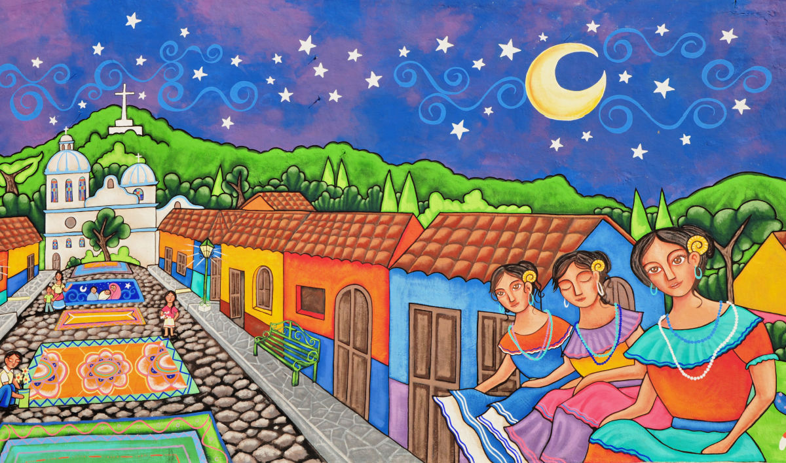

Lugares turiscos de El Salvador
Bienvenidos a nuestra pagina web!

Vista la Ruta de las Flores
PRINCIPALES ATRACTIVOS
- puedes hacer camitas en los pueblos
- hay algunos juegos extremos
| ruta de las flores |
1 |
2 |
3 |
4 |
5 |
6 |
|
Tacuba |
Cocepcion de Ataco |
Apaneca |
Juayua |
Salcoatitan |
Nahuizalco |
Cualquier informacion comuniquese con nosotros